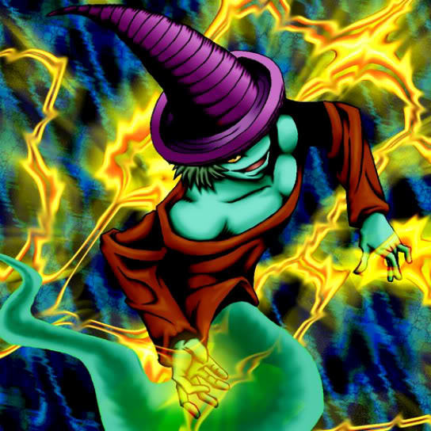

Magical Ghost

STATS
ATK: 1300
DEF: 1400DECK COST
Deck Cost per Card: 27Fusion List (12 Possible Fusions)
- Magical Ghost + Abyss Flower = Pumpking the King of Ghosts
- Magical Ghost + Arlownay = Pumpking the King of Ghosts
- Magical Ghost + Bean Soldier = Pumpking the King of Ghosts
- Magical Ghost + Dark Plant = Pumpking the King of Ghosts
- Magical Ghost + Doron = Armored Zombie
- Magical Ghost + Firegrass = Pumpking the King of Ghosts
- Magical Ghost + Griggle = Pumpking the King of Ghosts
- Magical Ghost + Laughing Flower = Pumpking the King of Ghosts
- Magical Ghost + M-Warrior #2 = Armored Zombie
- Magical Ghost + Rainbow Flower = Pumpking the King of Ghosts
- Magical Ghost + Swordsman from a Foreign Land = Armored Zombie
- Magical Ghost + Tentacle Plant = Pumpking the King of Ghosts